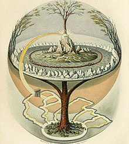

Destroid Company
@DestroidCo
Innovación y tecnolog铆a para el futuro. Exploramos ideas y desarrollamos soluciones para el ma帽ana.
San Cristóbal Huichochitl谩n
120 Tweets
500 Siguiendo
10K Seguidores
Destroid Company @DestroidCo · 1h
隆La innovación comienza con peque帽as ideas que cambian el mundo! 驴Qu茅 te inspira hoy?
12
34
❤️ 56
Destroid Company @DestroidCo · 3h
Estamos trabajando en proyectos que redefinir谩n el futuro. 隆Pronto m谩s noticias!
8
20
❤️ 40